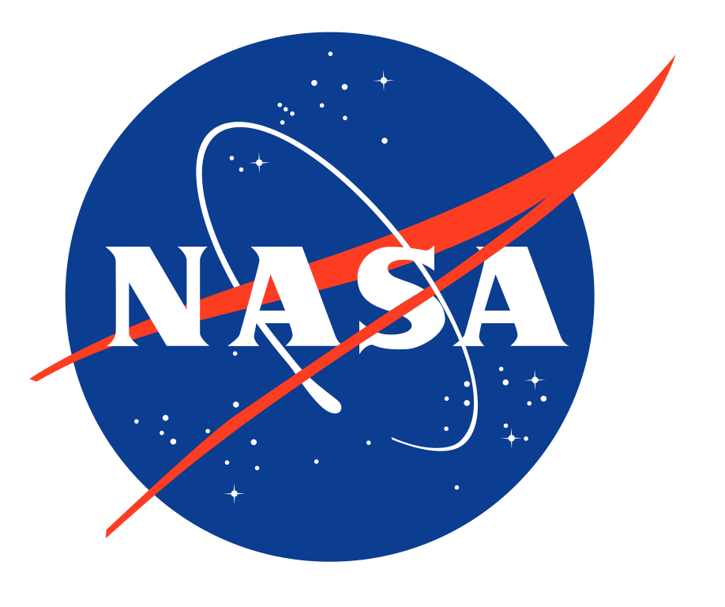

Noticias y Actualizaciones
Lanzamiento Oficial del Proyecto AURORA (10 de Enero, 2024)
Hoy marcamos el inicio de una nueva era en la exploración espacial con el lanzamiento oficial del Proyecto AURORA. Este ambicioso proyecto, liderado por NASA, SpaceX y el gobierno de los Estados Unidos, busca explorar y evaluar la habitabilidad de Marte y Júpiter a través de innovadoras plataformas y ecosistemas artificiales que serán desplegados en 2045.
Anuncio del Proceso de Selección de Astronautas (15 de Febrero, 2024)
Estamos emocionados de anunciar el inicio del proceso de selección de los diez astronautas que formarán parte del Proyecto AURORA. A lo largo del próximo año, se realizarán rigurosas pruebas físicas, mentales y de aptitud para identificar a los mejores candidatos que liderarán esta misión histórica en 2045.
Avances en el Desarrollo de Tecnología de Robots Avanzados (30 de Marzo, 2024)
Los equipos de ingeniería de NASA y SpaceX están trabajando arduamente en el desarrollo de robots avanzados que serán enviados a Marte y Júpiter en 2045. Estos robots estarán equipados para soportar las condiciones extremas de estos planetas y desempeñarán un papel crucial en la instalación de los ecosistemas artificiales.
Pruebas Iniciales de Ecosistemas Artificiales en la Tierra (20 de Abril, 2024)
Se han iniciado las pruebas preliminares de los ecosistemas artificiales en entornos simulados en la Tierra. Estos ecosistemas están diseñados para replicar las condiciones de Marte y Júpiter, y su éxito es fundamental para la viabilidad del proyecto previsto para 2045.
Visión General
El Proyecto AURORA representa una nueva era en la exploración espacial, con el objetivo de desbloquear los secretos de dos de los planetas más fascinantes de nuestro sistema solar: Marte y Júpiter. Al combinar tecnología punta con la determinación humana, aspiramos a comprender mejor la habitabilidad de estos mundos distantes y, en última instancia, allanar el camino para una eventual colonización. Nuestros principales objetivos incluyen:
Exploración Profunda: Sumergirse en las profundidades de Marte y Júpiter para comprender su composición, atmósfera y geología con un nivel de detalle sin precedentes.
Evaluación de Habitabilidad: Evaluar las condiciones de estos planetas en busca de signos de vida pasada o presente, así como determinar su viabilidad para la futura colonización humana.
Innovación Tecnológica: Desarrollar y probar tecnologías avanzadas, incluidos robots autónomos y sistemas de soporte vital, que permitan la exploración y colonización a larga distancia.
Organizaciones Involucradas
|  |
Fases del proyecto
El Proyecto AURORA se desarrollará a lo largo de varias fases clave, cada una diseñada para llevarnos un paso más cerca de nuestros objetivos finales:
Preparación (2045-2046): Durante esta fase inicial, se llevarán a cabo los preparativos logísticos y tecnológicos necesarios para la misión. Esto incluirá el desarrollo final de la tecnología, la selección y entrenamiento de los astronautas, así como la planificación detallada de las operaciones en Marte y Júpiter.
Exploración de Marte (2046-2048): La siguiente fase se centrará en la exploración detallada de Marte. Se enviarán robots avanzados a la superficie del planeta rojo para recolectar muestras, analizar la composición del suelo y estudiar las condiciones atmosféricas. Los astronautas supervisarán estas operaciones desde la Tierra y dirigirán la toma de decisiones en tiempo real.
Exploración de Júpiter (2048-2050): Con la información recopilada de Marte, la atención se dirigirá hacia Júpiter. A pesar de sus desafíos únicos, se enviarán robots a la atmósfera y lunas de Júpiter para realizar estudios detallados. Esta fase también incluirá la exploración de la luna Europa en busca de signos de vida.
Análisis y Conclusiones (2050): La fase final del proyecto consistirá en el análisis exhaustivo de los datos recopilados durante las fases de exploración. Se elaborará un informe detallado que resuma los hallazgos clave y presente recomendaciones para futuras misiones y la eventual colonización de Marte y Júpiter.
Involúcrate con AURORA
El Proyecto AURORA es una iniciativa de colaboración global que invita a científicos, ingenieros y entusiastas del espacio de todo el mundo a unirse a nosotros en esta misión histórica. Hay varias maneras en que puedes participar y contribuir al éxito del proyecto:
Investigación y Desarrollo: Únete a nuestros equipos de investigación para ayudar a desarrollar las tecnologías avanzadas necesarias para la exploración y colonización de Marte y Júpiter.
Voluntariado: Participa en eventos de divulgación y actividades educativas para inspirar a la próxima generación de exploradores espaciales.
Donaciones: Contribuye con fondos para apoyar la investigación y las operaciones del Proyecto AURORA. Cada donación, grande o pequeña, nos acerca más a nuestros objetivos.
Convocatoria
Invitamos a científicos, ingenieros y entusiastas del espacio a participar en nuestra convocatoria abierta para unirse al Proyecto AURORA. Estamos buscando personas apasionadas y talentosas que estén dispuestas a contribuir con sus habilidades y conocimientos en una variedad de áreas:
Astrobiología: Investiga la posibilidad de vida en Marte y Júpiter, y ayuda a diseñar experimentos para detectar signos de vida.
Ingeniería Robótica: Desarrolla y prueba robots avanzados que realizarán tareas en entornos extremos.
Sistemas de Soporte Vital: Diseña sistemas que permitan a los astronautas vivir y trabajar de manera segura en Marte y Júpiter.
Si estás interesado en unirte a esta misión pionera, por favor visita nuestra página de convocatoria y completa el formulario de solicitud.
Contáctanos
Si tienes preguntas o deseas obtener más información sobre el Proyecto AURORA, no dudes en contactarnos:
Email: info@auroraproject.com
Teléfono: +1 (555) 123-4567
Dirección: 1234 Elm Street, Ciudad Espacial, USA